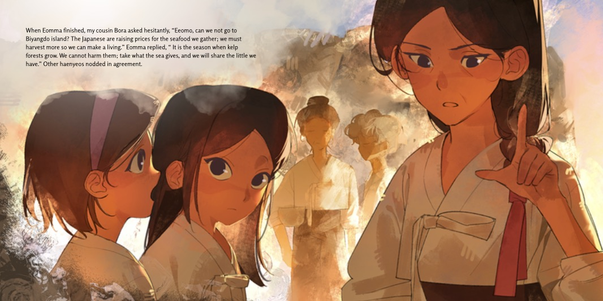
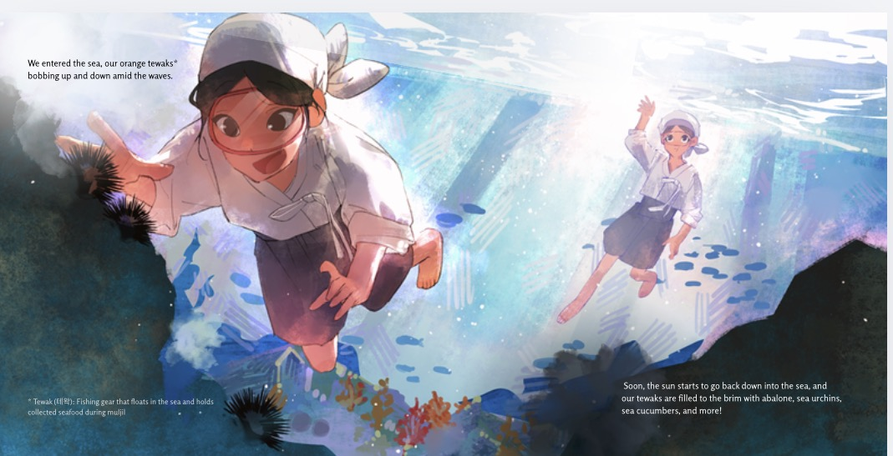
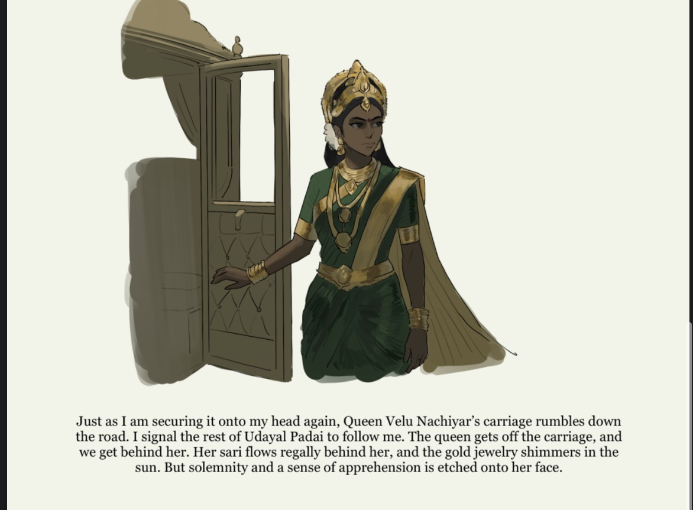
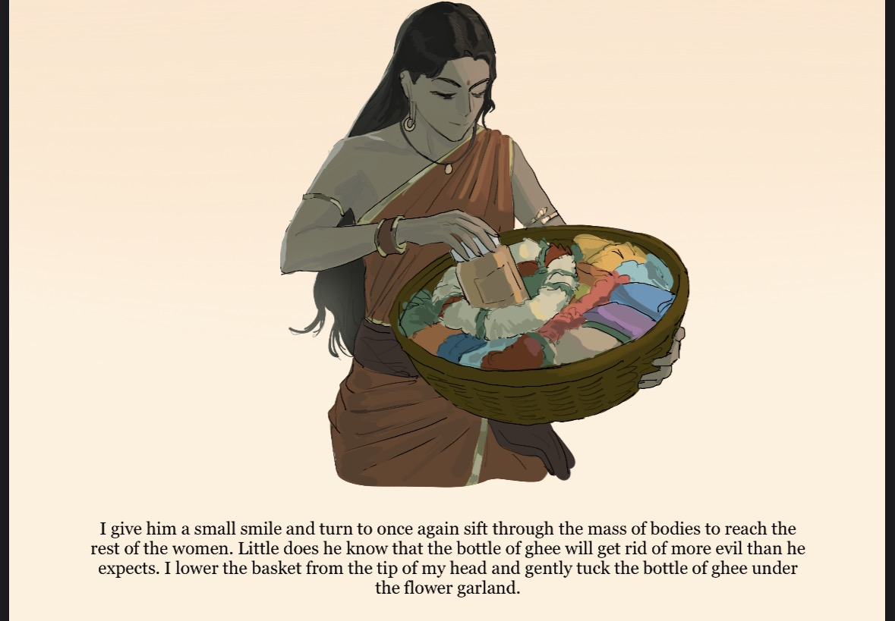

Books to Promote Multiculturalism
November 2025
Sprouts for Learning is a student-run organization. Partnering with over 10+ organizations, such as the United Nations Educational, Scientific, and Cultural Organization (UNESCO). The organization began with the primary goal of improving literacy in impoverished countries and low-income communities. Initially, the organization only sent out monthly worksheets to partner organizations. However, since then, Sprouts for Learning has taken a different direction, veering toward improving both literacy and culturalism.
It all began when I was teaching elementary kids English in a library. We were reading a story, and the young boy asked me, “Why are they eating bread in the morning instead of rice?” At that point, I realized how important stories were, not only for achieving literacy but also for becoming a global citizen. After sharing this story with several members of Sprouts, we came up with a plan. Instead of simply sending monthly worksheets, we would create a project that could promote literacy and cultural understanding among young readers.
This is when the Cultural Books Project was enacted. Through this project, Sprouts members helped write and illustrate books. The books featured folktales from China, Japan, and Korea, allowing children to explore the stories, values, and traditions of East Asian cultures. Afterwards, we partnered with 20 small libraries across Gyeonggi-do. These libraries were located in low-income communities, and thus, they were elated to receive children's books in English.
This project would never have been possible without the collaboration of several contributors. Yunnie Ha, Gayeong Heo, Julie Mok, Mandy Shin, Catherine Park, Jasmine Kim, and Siena Shin served as the main illustrators, helping bring the folktales to life with vibrant and beautiful artwork. I helped edit the stories, ensuring they were clear, engaging, and at the right level for English language learners. Together, we helped transform traditional folktales into educational materials that are both meaningful and enjoyable for children.
With this distribution process, Sprouts for Learning aims to promote literacy while also encouraging children to have a wider global perspective. Reading folktales from different neighboring communities can help children learn about common values and appreciate cultural diversity. Children can also develop a sense of understanding and empathy for people in different communities. In essence, Sprouts for Learning aims to promote the development of globally conscious citizens as well as improve literacy.

A glimpse from the book

A glimpse from the book

A glimpse from the book

A glimpse from the book